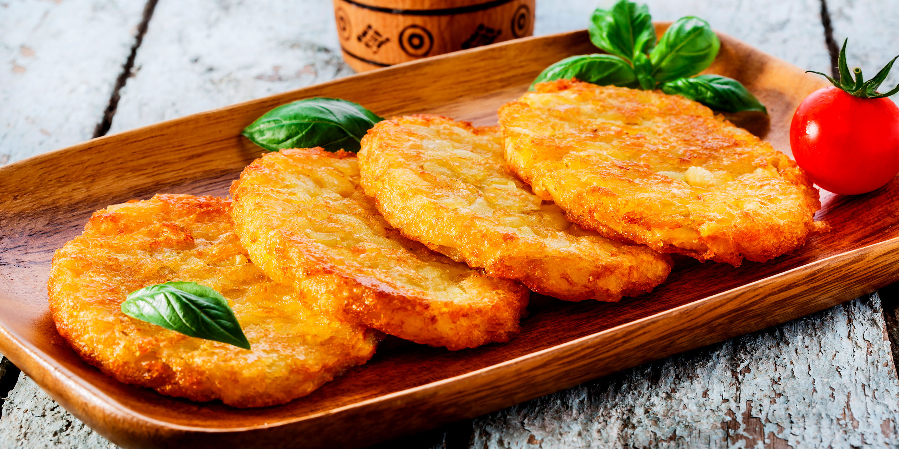
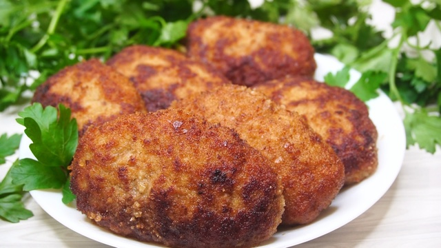

Блюда для вкусного и сытного обеда
Борщ
Борщ - традиционное восточнославянское блюдо, которое готовится со свеклой, что придаёт ему характерный насыщенный цвет. В отличие от обычных супов он густой.
Основные индинриенты:
- Мясо (свинина или говядина);
- Свекла;
- Морковь;
- Картофель;
- Лук репчатый;
- Капуста;
- Перец, соль, лавровый лист.

Драники
Картофельные оладьи — популярное блюдо европейской кухни. Картофельные блины и оладьи можно встретить практически везде, где в пищу употребляется картофель — от Латинской Америки до Северной Европы. Под названием «драники» являются неотъемлемым атрибутом белорусской кухни.
Основные индинриенты:
- Картофель;
- Лук;
- Куриные яйца;
- Картофель;
- Пшеничная мука;
- Перец, соль, растительное масло.

Котлеты
Котлета — в первоначальном значении: кусок мяса, приготовленный на кости. В современном русской кухне: изделие из мясного фарша, его аналога или заменителя.
Основные индинриенты:
- Фарш мясной;
- Яйца (желток);
- Лук репчатый;
- Хлеб белый (мякоть);
- Молоко;
- Перец, соль, растительное масло.
